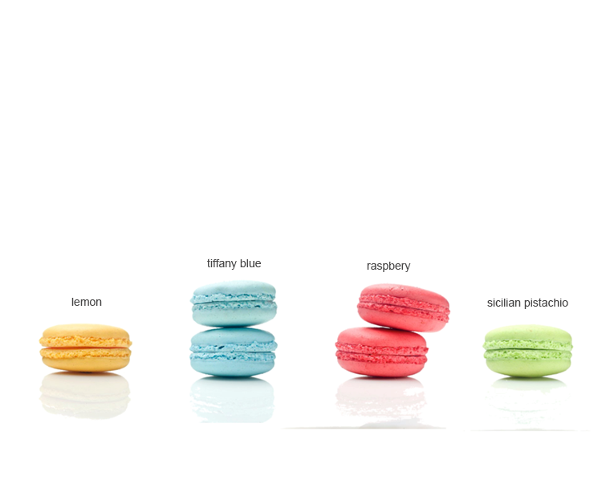

Our macarons are freshly made by hand
The vivid hues of our unique macarons reflect the natural flavors and essences that infuse the ganache filling of these delicious almond cookies - each has its own personality, and all of them are made to savour for their delicacy and unique character.
Classics

After purchase we recommend keeping macarons in the refrigerator; let them come to room temperature before serving - about 10 minutes. For best degustation, our macarons should be consumed within 3 days.